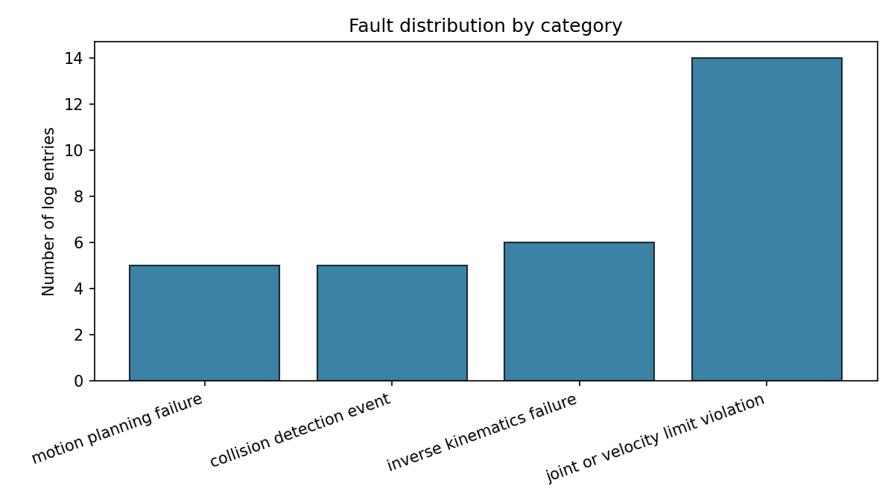
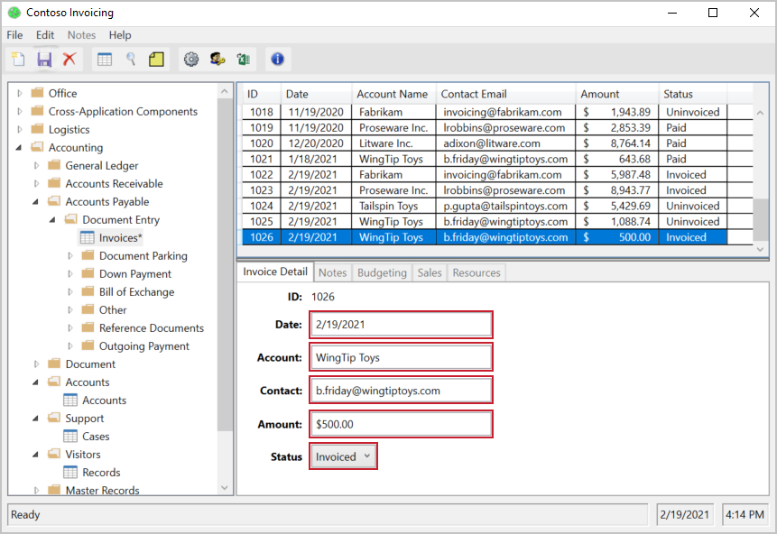
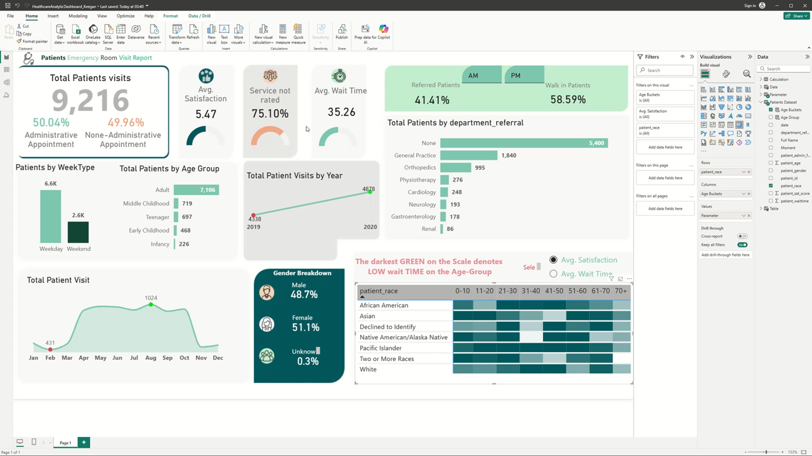
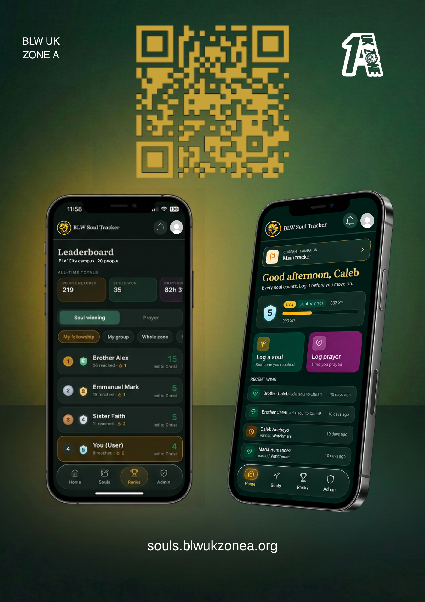
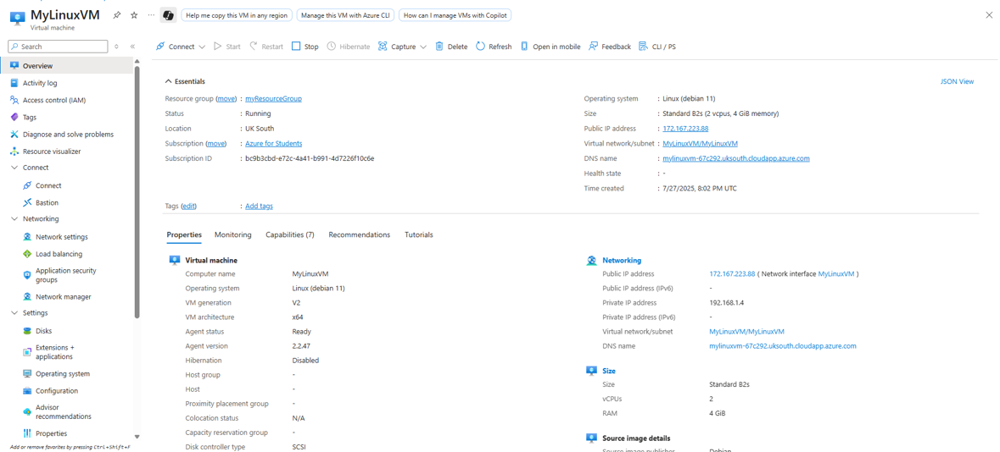

Featured Projects
Things I have built, from AI tooling and automation to data analysis, full-stack software and cloud.

Robot Fault Log Classifier
A Python command-line tool that sorts robot fault-log entries into four categories (motion planning failure, collision detection, inverse kinematics failure, and joint or velocity limit violation) using a pre-trained model with zero-shot classification, so no training data or GPU is needed. I built it after manually triaging fault logs on a university robotics project, and kept it small and well scoped, with 30 hand-written example logs and a chart of results.
View Project

Invoice Automation
A Power Automate Desktop flow, built with the UI recorder, that automates a legacy Windows invoicing app (Microsoft's Contoso sample): it opens the app, navigates to an invoice record, fills in the account, contact, date and amount fields, and sets the status to "Invoiced". It is a single flow of 10 recorded actions, and I hold four Microsoft Learn certifications across Power BI, Power Apps, Power Automate and SharePoint.
View Project

Emergency Room Analytics Dashboard
An interactive Power BI dashboard analysing 9,216 emergency room patient visits from a sample practice dataset (not real hospital data), with SQL queries I wrote to extract and transform the data. It shows an average wait time of 35.26 minutes, an average satisfaction score of 5.47 and a referred vs walk-in split of 41% vs 59%, with breakdowns by department, age group, gender and race, including a heatmap of wait time by age group and race.
View Project

BLW UK Zone A Activity Tracker
A full-stack progressive web app that I started on my own and built from scratch for a nonprofit community organisation, to track engagement and activity in real time. It later grew into a team project with other contributors, and includes account login, real-time updates and push notifications, running on a live server.
View Project

Azure Cloud Deployment
Deployed a Linux virtual machine and a SQL database on Microsoft Azure, with firewall rules and authentication configured. Parts of the setup were automated using Bash and PowerShell scripts.
View Project